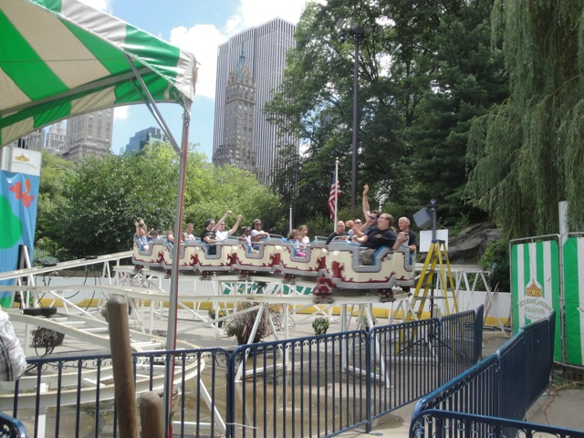
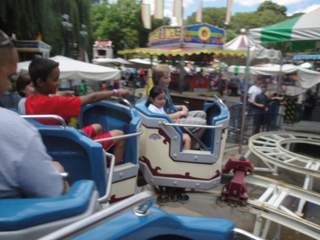

| |
Mini Mouse Review

We're here at Victorian Gardens. And since we're here to credit whore, well, it's time to roll up our sleeves and get this pathetic little credit. And let me tell you. This one isn't just emberassing, it's REALLY emberrasing. This is one of those kiddy coasters that borders on that fuzzy line of whether it should even be counted as a credit or not, but the Zamperla Mini Mice just barely make the cut of being a credit, and so, here we are. Riding. We hop in the car, and off we go. We go up a tiny lift hill, and from here. Its just a bunch of teeny tiny turns. There's not even a drop. Its just turns. See what I mean when its a borderline kiddy credit? Yeah, that pretty much just sums it up right there. And that's it, though we do get a couple more laps. Joy. So that's the Mini Mouse. It's short, it's too much money, and you know you're a whore riding this ride.
1/10
Location: Victorian Gardens
Opened: 2003
Built by: Zamperla
Last Ridden: July 27, 2011
I have ridden this exact same ride at the following parks.
Gröna Lund
Mini Mouse Photos

Home
|